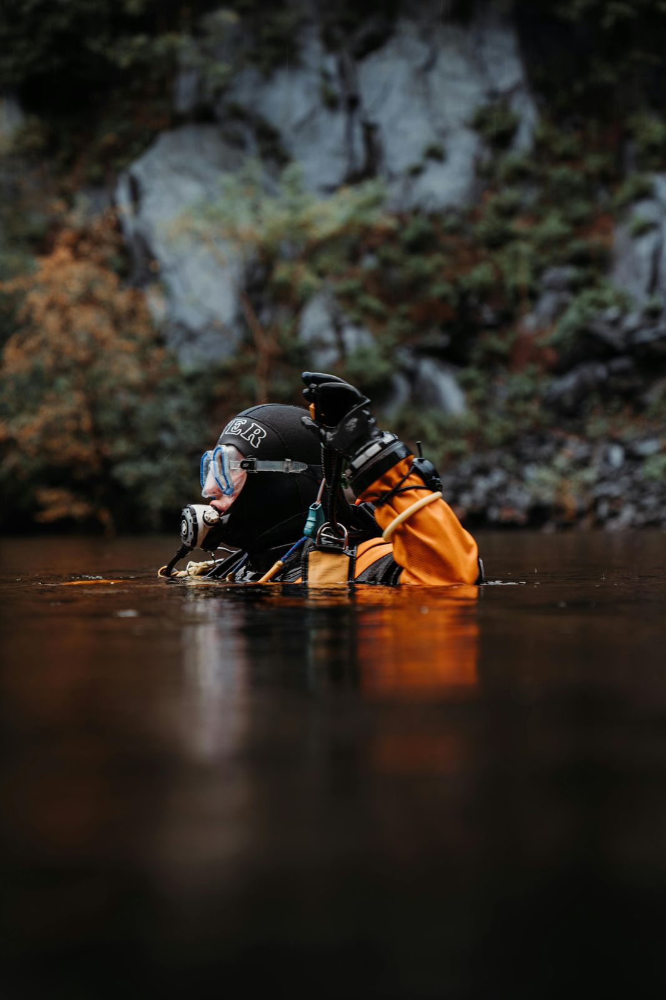

Heikle Aufgaben brauchen die richtige Qualifikation.
Industrietaucher und zertifizierter Sprengmeister in einer Person. Für Arbeiten, bei denen Sicherheit und Absprache mit den Behörden an erster Stelle stehen.
Lokalisieren, dokumentieren, koordinieren
Am Grund von Seen und Flüssen liegen Altlasten: Fässer, Behälter, Batterien, Industrieabfälle oder Reste von Bauarbeiten. Bevor über eine Entfernung entschieden werden kann, muss klar sein, was wo liegt.
Wir suchen das Gebiet systematisch ab, halten Funde mit Foto und Position fest und beschreiben den sichtbaren Zustand. Die Entfernung erfolgt anschliessend koordiniert mit den zuständigen Fachstellen und Entsorgungsbetrieben.
- Rastersuche nach Gefahrstoffen und Altlasten
- Erstbefund mit Foto, Video und GPS-Position
- Grundlagen für Umwelt- und Gewässerschutzfachstellen
- Mitwirkung bei der koordinierten Bergung
Zivile Sprengarbeiten mit Sprengberechtigung
Unser Einsatzleiter ist zertifizierter Sprengmeister mit Sprengberechtigung Schweiz. Damit können wir zivile Sprengarbeiten im und am Wasser planen und ausführen, etwa das Lösen von Fels oder Hindernissen, sofern die Bewilligungen vorliegen.
Sprengarbeiten unter Wasser erfordern eine sorgfältige Planung: Bewilligung, Absperrung, Information von Anwohnern und Schifffahrt, Schutz von Fischen und Bauwerken. Wir erarbeiten diese Grundlagen gemeinsam mit Ihnen und den Behörden.
- Machbarkeitsabklärung und Konzept
- Koordination mit Bewilligungsbehörden
- Ausführung nach Stand der Technik
- Dokumentation vor und nach der Sprengung
Immer schriftlich
Sprengmittel-Einsätze führen wir ausschliesslich auf Grundlage einer schriftlichen Offerte und der nötigen Bewilligungen aus.
Immer mit Behörden
Arbeiten mit Gefahrstoffen und Sprengmitteln erfolgen in Absprache mit den zuständigen Fachstellen.
Immer dokumentiert
Lage, Zustand, Vorgehen und Ergebnis werden lückenlos festgehalten.
Vorhaben besprechen
Solche Aufträge beginnen mit einem Gespräch. Rufen Sie uns an oder schreiben Sie uns.